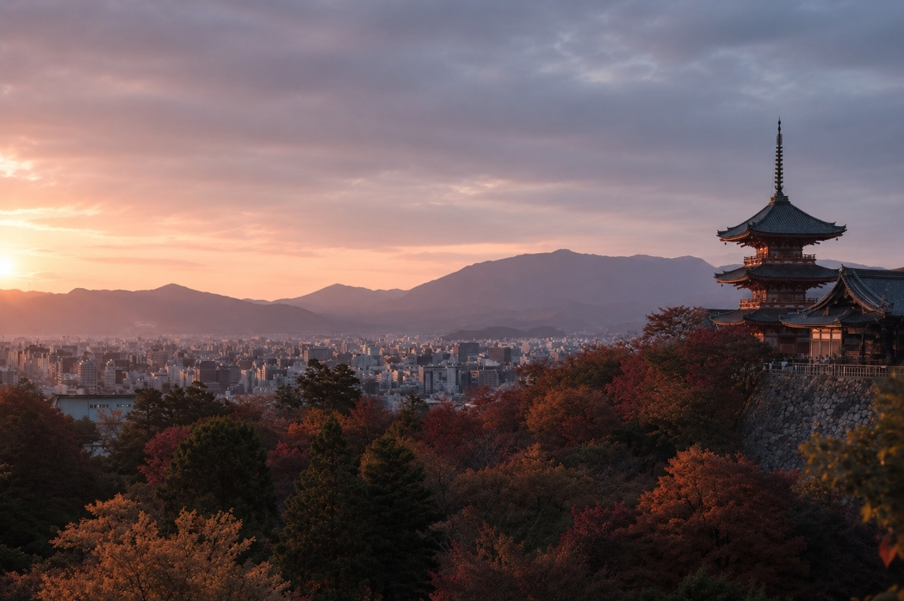
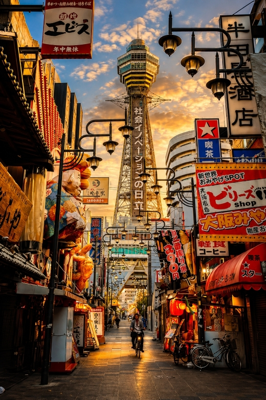
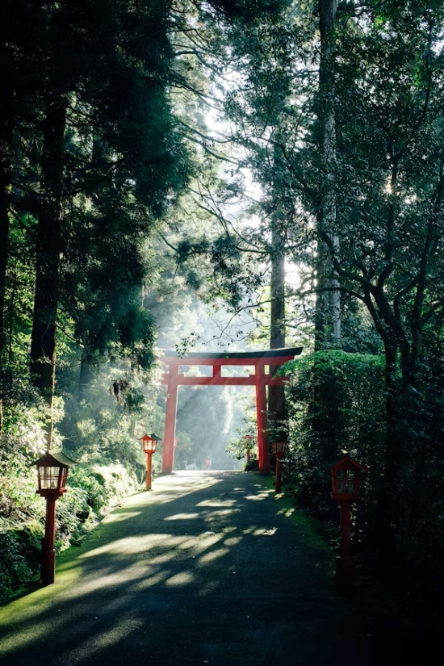
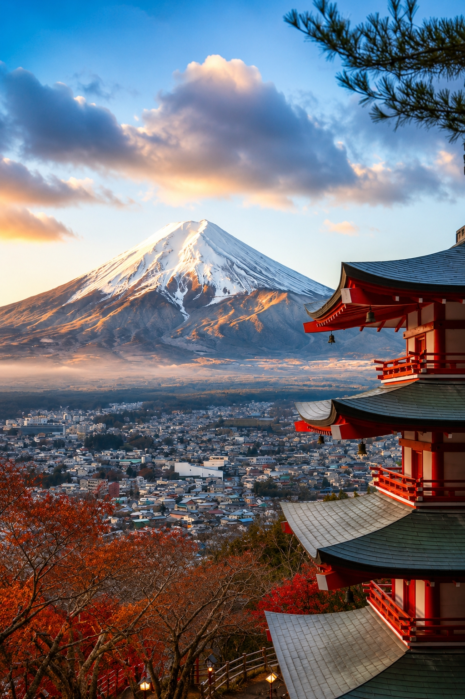
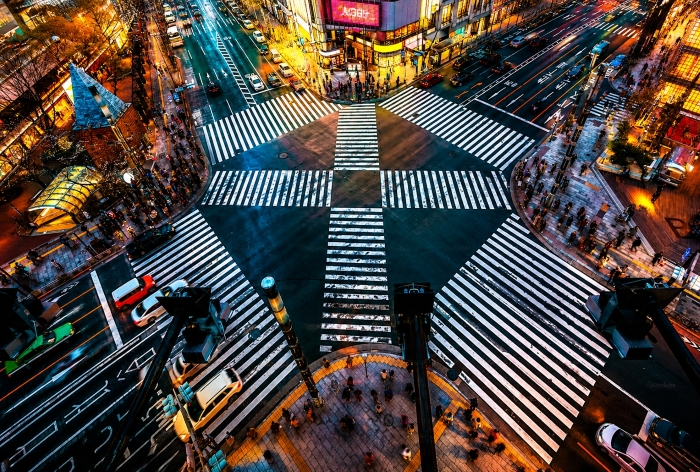
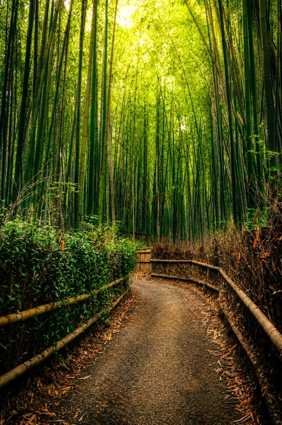
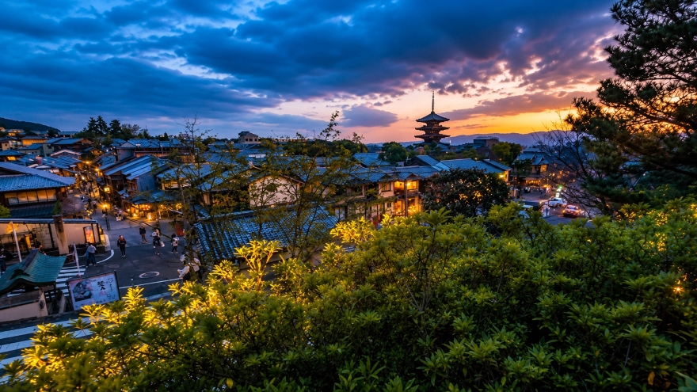
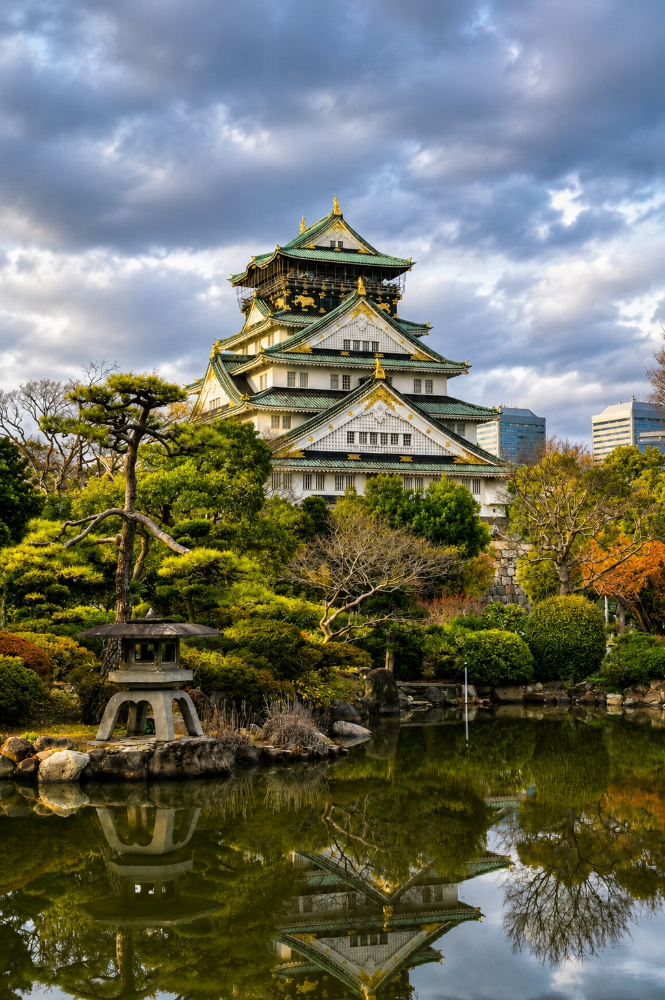
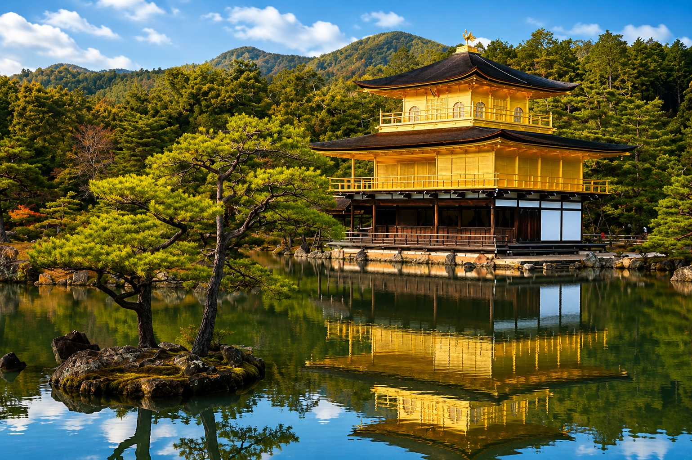

Mar – May
Tokyo
Neon-lit crossings, hushed shrine courtyards and the world's finest tasting menus, layered inside one sprawling metropolis.
- Mar – MayBest Season
- 5–7 DaysDuration
- $1,240From
Licensed Local Guides · Est. 2010
A curated first look at Japan — from neon crossings to quiet shrine gardens, told through the people who live there.
Explore Tours →Every itinerary is paced for wonder, not rush — mornings for temples, evenings for the city's electric skyline.
Reserve Your Seat →Small groups, licensed local guides, and stays chosen for character — luxury measured in detail, not size.
See Destinations →and take the memory home with you
five regions, one unforgettable journey
Neon-lit crossings, hushed shrine courtyards and the world's finest tasting menus, layered inside one sprawling metropolis.

Oct – NovThousand-gate shrine paths, quiet machiya alleys and gardens built centuries before the word "zen" reached the West.

Apr – JunFeudal ramparts by day, the country's boldest street-food scene by night — Japan's kitchen at its most unbuttoned.

Sep – NovHot-spring ryokans, sulphur-streaked mountain trails and a slow cable-car glide with Fuji framed the whole way up.

Jan – MarJapan's sacred summit — crisp lakeside sunrise views, quiet pilgrim trails, and the country's most iconic silhouette.
a visual journey through japan

Tokyo
Every ninety seconds, up to three thousand people cross at once beneath a wall of neon — controlled chaos that somehow always resolves. Stand at the window above for the view every photographer chases, then disappear into the alleys of Center Gai for standing-room ramen and record shops stacked three deep.
Explore More
Kyoto
Sunlight fractures into a thousand green shards as the stalks creak and sway overhead — a sound Japan's Ministry of Environment once named among the country's hundred soundscapes worth preserving. Arrive at dawn, before the tour groups, and the grove is yours alone.
Explore More
Kyoto
Wooden machiya facades glow amber under paper lanterns as the city's last working geisha district comes alive after dusk. Wander Hanami-koji slowly enough, and you might catch a maiko slipping between engagements — a fleeting, photograph-only encounter locals ask you to respect.
Explore MoreTokaido Line
At 285 km/h, Mount Fuji appears in the window for barely ninety seconds — long enough for a photo, if you know which side to sit on. We tell you the exact carriage and seat number before you board, and time departures around a clear-sky forecast.
Explore More
Osaka
Rebuilt in ferroconcrete after fire and war claimed the original twice, the castle now anchors a park that turns violently, beautifully pink each April. Climb to the top-floor observatory for a skyline view, then follow the moat path down to the city's boldest street-food stalls.
Explore More
Kyoto
Gold leaf laid three layers thick reflects perfectly across the pond it was built beside in 1397 — a view so exact it barely looks real in person. Come within the first hour after opening, when the water is still and the crowds haven't yet arrived.
Explore MoreTravel opens your heart, clears your mind, and fills your life with unforgettable memories. Japan is waiting to inspire you.
stories from the road
★★★★★
"Every detail felt considered — from the ryokan chosen for its onsen view to the exact hour we walked through Fushimi Inari to miss the crowds. This wasn't a tour, it was a love letter to Japan."

Sarah Bennett
🇺🇸 United States
★★★★★
"Our guide's local connections got us into a tea ceremony that isn't on any itinerary I've seen. Osaka's food crawl alone was worth the trip. Seamless from landing to departure."

Marcus Lindqvist
🇸🇪 Sweden
★★★★★
"Hakone in the mist, exactly as promised. The pace never felt rushed, and every hotel they picked overdelivered. I've already booked our second trip with them."

Amara Okafor
🇳🇬 Nigeria
★★★★★
"Sakura season is chaos everywhere else in the city — somehow they found us quiet pockets of it. Small-group pacing made all the difference for our family of five."

Julien Moreau
🇫🇷 France
★★★★★
"Booked six weeks out expecting the usual tourist trail. Got Michelin-adjacent meals, a private garden visit, and a driver who felt like an old friend by day three."

Hana Kobayashi
🇸🇬 Singapore
answers before you ask
Visa requirements depend on your nationality. Many countries — including the US, UK, EU members, Canada and Australia — can enter Japan visa-free for short tourist stays. We'll confirm your specific requirement once you share your passport country during booking.
Late March to early May (cherry blossoms) and October to November (autumn foliage) are the most popular and most beautiful windows. For fewer crowds and lower rates, consider late June or February, both still rich with local festivals.
Our small-group departures cap at 10 travelers, and private/family departures are available on every itinerary if you'd prefer to travel with just your own party.
Accommodation, all listed transport (including regional rail passes where noted), a licensed local guide, entry fees for scheduled sites, and daily breakfast. International flights, personal spending and optional excursions are not included unless stated.
Yes — every published tour can be adjusted in pace, hotel tier, or region, and we build fully bespoke itineraries on request. Mention what you'd like changed when you reserve your seat and a guide will follow up directly.
Full refunds are available up to 30 days before departure, 50% up to 14 days before, and travel credit (valid 12 months) inside that window. We also recommend independent travel insurance for unforeseen changes.
Absolutely. Vegetarian, vegan, halal and allergy-specific needs can be arranged at nearly every included meal — just let us know at booking so your guide can brief partner restaurants in advance.
It isn't mandatory, but we strongly recommend it for medical coverage, trip interruption and baggage protection. Several of our partner insurers offer preferred rates for booked travelers — ask your guide for a referral.
Not at all. Your guide handles translation throughout, and we equip every traveler with a small phrasebook and offline translation app before departure for moments on your own.
plan your journey
4F Sakura Building, 2-3 Kanda-Jimbocho
Chiyoda, Tokyo 101-0051, Japan